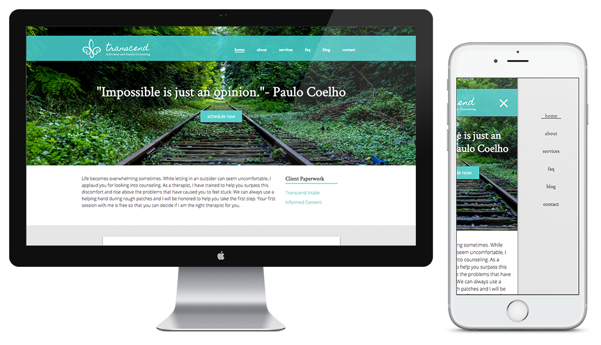
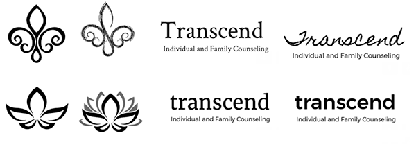
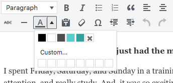

logo & website designs
freelance designer for Transcend Family & Individual Counseling

Transcend was a new business so my client, Robyn, and I were starting from scratch. The company first needed a logo then a website to give potential clients some information about Robyn and her practice. She knew what colors she liked and had some general ideas about iconography, but as far as the look of the site, the project was fairly open-ended. Robyn knew what she didn't like but wasn't entirely sure what she wanted the site to look like.
I met with my client over coffee to look at examples and talk about her goals for the practice. We discussed her target demographic, the kind of client she wanted to attract, and the feelings she wanted her site to convey. She showed me examples of sites she didn't like, and I looked into competing websites to get an idea of the industry standard.
Robyn liked the imagery of a lotus, fleur de lis, or water droplet. I did a lot of rough sketches playing with these concepts before ever touching the design on a computer. Then I created a few different logomarks and font combinations for Robyn to choose from. She mixed and matched elements from each, so I put those together and added color.
Once she was happy with the logo design, I created a home page and subpage examples with dummy content for two different website designs. After Robyn picked the layout and design she liked, I worked from a boilerplate WordPress theme I created a while ago, customizing the layout and look to match the design and meet her needs. She needed to have a blog, a contact form, and the ability for potential patients to download paperwork.
(right) final page designs:
In this project, I really had two users in mind: the potential patients on the front end and the user creating content on the back end. For users visiting the Transcend counseling site, I kept the most important information "above the fold" — a link to schedule appointments, a mission statement, and new client paperwork.
a branded login page also shows the vertical version of the final logo design
I provided a contact page with a spam-free form but kept persistent contact information in the footer. Alongside the basic information and FAQ pages, Robyn has a blog with the ability to view posts by date or category tag. The front page can show either the most recent posts or any post marked as "featured" that she wants to pin to the front.

I wanted to keep a consistent, personalized experience even on the user dashboard, for example branding the login page. To make sure the pages would be cohesive even after handing the site off to my client, I created reusable styles for blog posts and populated the WISYWIG editor with colors that correspond to the design. To help Robyn get a snapshot of her visitors, I set up Google analytics and integrated it with her WordPress dashboard for easy access.
Since this isn't an e-commerce site, the results are a little harder to quantify than some previous projects. The most important thing to me was that my client was happy with the finished product and felt comfortable creating and editing content. Robyn's calendar has been full since the site launched. Still, some numbers:
more than half of all users visit at least two pages on the site, with a bounce rate of 42.6%
users are visiting an average of nearly 3 pages per session
despite conversions occurring offline, more than a third of users return to the site at least once